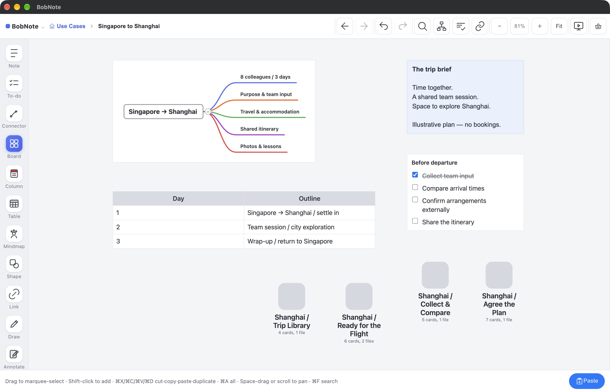
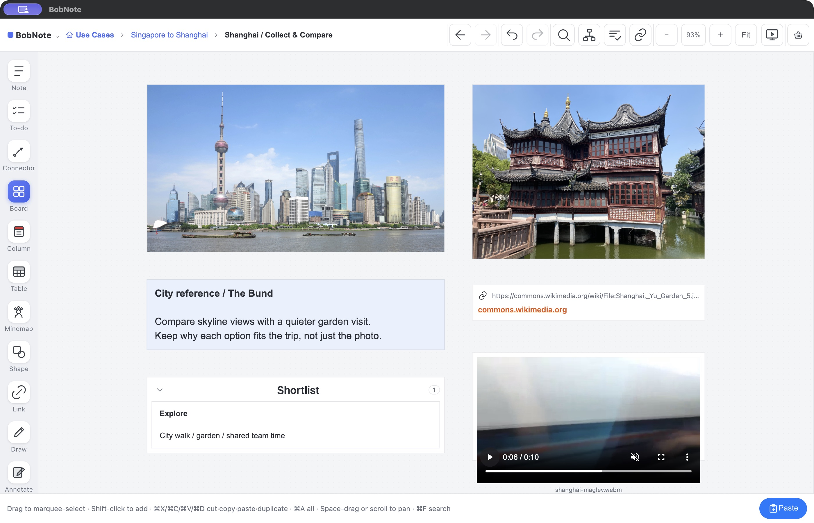
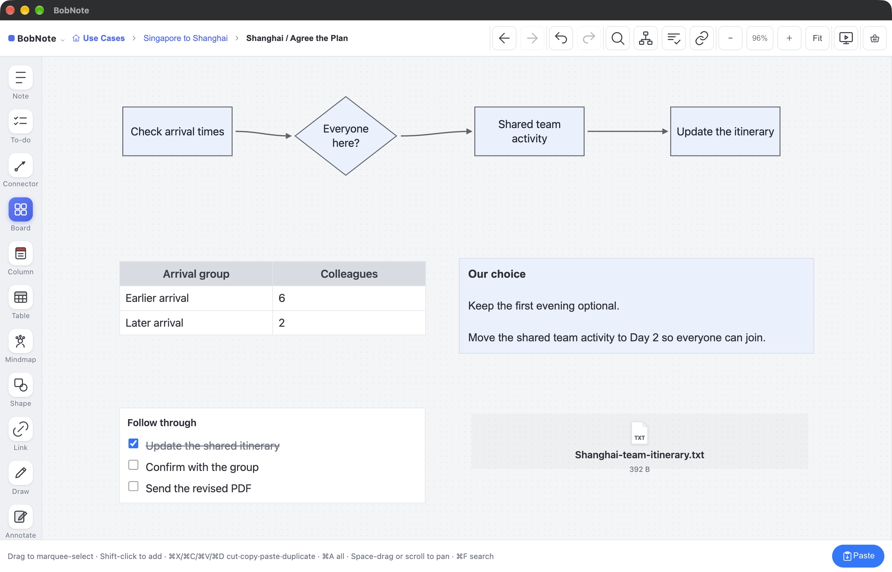
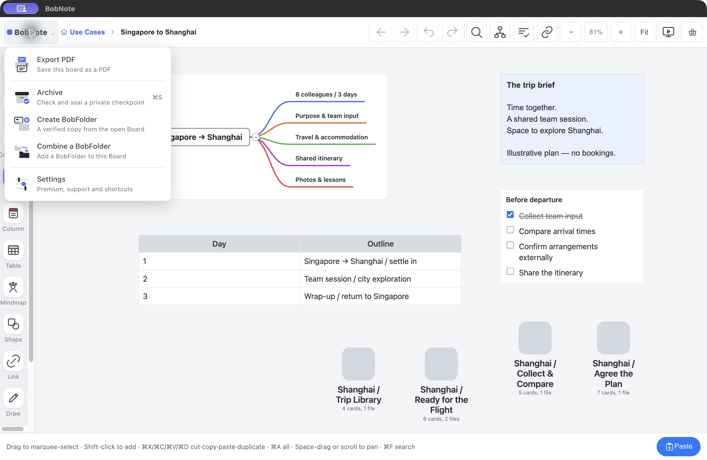
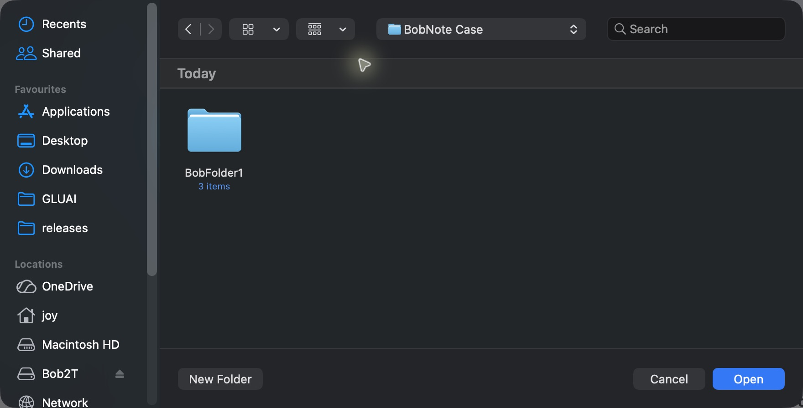
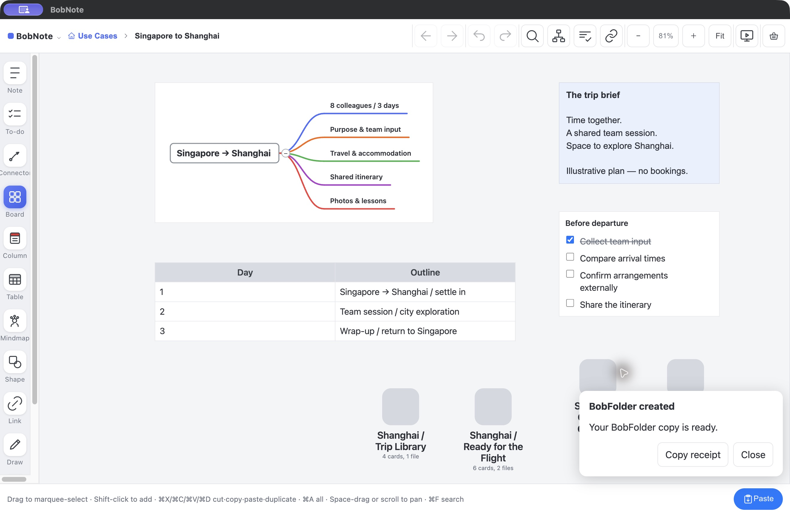
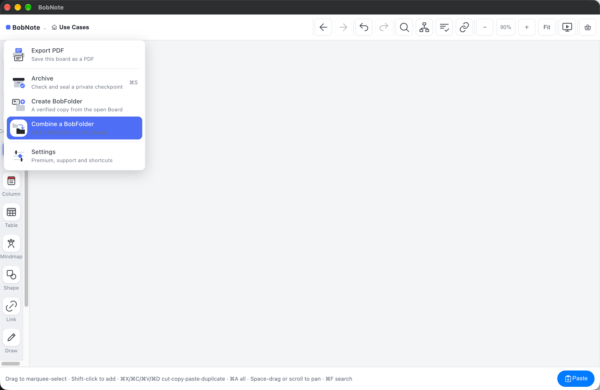
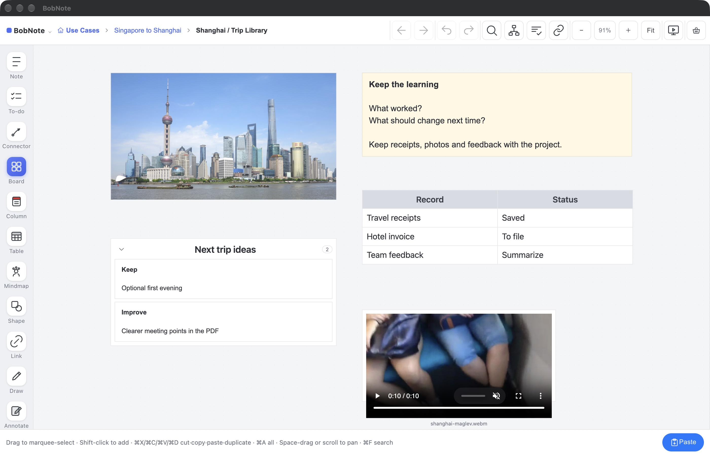

USE CASES / TEAM TRIP
Singapore to Shanghai.
One team. One clear plan.
You are organizing a three-day trip for eight colleagues. Keep the purpose, input, choices, confirmations and follow-ups in the same project.
Illustrative itinerary, not travel advice or actual bookings · Real BobNote product screens
01 / PLAN
Put the purpose before the logistics.
Start with a Mindmap: people, dates, budget, transport, activities and follow-up. Add a simple itinerary Table and a departure checklist. Give detailed topics their own Boards.
The benefit: everyone’s input can be considered against a clear project brief.
Mindmap · Board · Note · Table · To-do

02 / EXPLORE
Compare possibilities with the context beside them.
Collect Shanghai reference photos, provider links and local video clips. Explain why each option might suit the group, then use Columns to keep the shortlist organized.
The benefit: a visual comparison the team can discuss in a meeting.
Image · Link · Video · Column · Note

03 / DECIDE & CONFIRM
Show why the itinerary changed.
Six colleagues arrive earlier; two arrive later. Put the arrival Table beside a Shape-and-Connector flowchart and a decision Note: keep the first evening optional and move the main team activity to Day 2. Attach the updated itinerary and follow through with a checklist.
The benefit: a visible reason for the change and a clear next action.
Table · Shape · Connector · Note · File · To-do

04 / TAKE IT WITH YOU
Take your project with you.
Open the trip Board and choose BobNote → Create BobFolder. Save the portable copy, then transfer the complete folder using your chosen cloud drive, USB drive or external drive.
On the other device, open the destination Board and choose BobNote → Combine a BobFolder. Select the transferred folder. Once the import finishes, open the new project Board to review your material, refine the agenda and update the checklist.
The benefit: your project travels with its files, notes and context together.
Create / Combine BobFolder · File · Audio · Note · To-do
Start from the project you want to take.
- Open the project Board. In this example, open Singapore to Shanghai. Create includes this Board and its nested Boards.
- Open the BobNote menu → Create BobFolder. This is the step before the folder chooser appears.
- Choose where to save. Select a destination folder, then wait for BobNote to confirm completion.
- Transfer the whole folder. If you use a cloud drive, finish downloading all its contents on the destination device.
- Combine, then continue. Open BobNote on the destination device, choose the Board you want to add the project to, then select BobNote → Combine a BobFolder. Choose the complete transferred folder and wait for the result before opening the imported project.




05 / KEEP THE LEARNING
Make the next trip easier to plan.
Keep a photo library, saved receipts and a short record of what worked. Use Notes and Columns for feedback themes. Share a team-friendly PDF or BobFolder, keeping personal organizer records outside the shared project.
The benefit: one finished trip becomes a useful starting point for the next.
Board · Image · Video · File · Table · Column · Note

Your material. Your choice of what to share.
BobNote keeps the working project on your device. You choose when and how to share it. Cloud-drive transfers use that provider’s service; BobFolder transfer is not automatic synchronization or live co-editing.
Mindmap and Create / Combine require Premium. Standard PDFs include a BobNote mark. Saved attachments may require another application to open.
Explore the Home Renovation case →